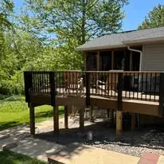

How much does this service cost?
Pricing depends on square footage, finish type, thickness, tear-out, and site access. We give Belleville homeowners written estimates after we see the actual site conditions.
All-Pro Construction provides professional concrete services in Belleville IL including driveways, patios, and walkways. We focus on durability, clean finishes, and long-term performance.

We handle the concrete projects Belleville homeowners need most: new driveways, patio slabs, sidewalks, pads, tear-out and replacement work, and concrete upgrades that need to survive Southern Illinois weather.
Long-lasting concrete starts before the pour. We pay attention to excavation, base prep, drainage, reinforcement, edge work, control joints, and curing so the finished slab looks clean and performs better through freeze-thaw cycles.
If you already have failing concrete, we can help you decide whether patching makes sense or whether replacement is the better long-term move.
Driveway and patio pricing usually depends on square footage, finish type, thickness, removal work, and site access. If you are still budgeting, start with our cost guide or use the smart estimator before scheduling a site visit.
We serve Belleville, Swansea, Shiloh, O'Fallon, Fairview Heights, Mascoutah, and surrounding Metro East neighborhoods. That local experience matters when you are planning driveway slopes, drainage, or replacement work on older concrete.
Visit the Belleville service hubClear answers for homeowners comparing local contractors.
Pricing depends on square footage, finish type, thickness, tear-out, and site access. We give Belleville homeowners written estimates after we see the actual site conditions.
Most residential concrete projects can be scheduled quickly once the scope, weather window, and site prep are confirmed.
Yes. We serve Belleville, O'Fallon, Fairview Heights, Edwardsville, and nearby Metro East communities.
Owner-led projects usually mean tighter quality control, faster job decisions, and fewer surprises between the estimate and the actual pour.
Contact All-Pro Construction for a clear scope and a free estimate.
Request Your Estimate